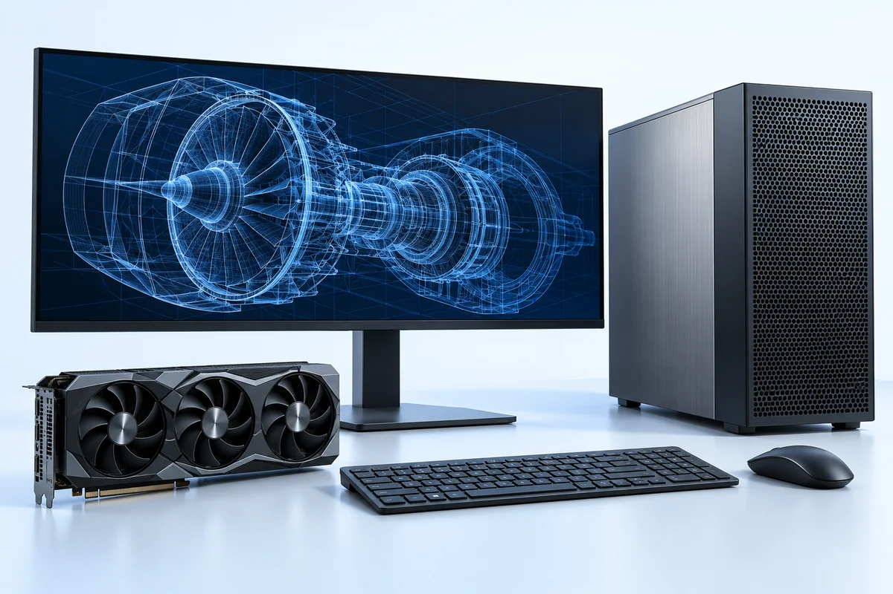

Рабочее место и офис / 15
Профессиональные рабочие станции
Поставка профессиональных рабочих станций для CAD, 3D, инженерии, дизайна и вычислений.
Запросить цену
6 групп продукцииГруппы продукции
Профессиональные рабочие станции
Добавьте нужные группы продукции в запрос. Точные модели и характеристики можно указать в обращении.
Мобильные рабочие станции
Компактные рабочие станции
Рабочие станции GPU и AI
Конфигурации для CAD и 3D
Профессиональные GPU, память ECC и аксессуары
Типичные сценарии
- Корпоративные рабочие места
- Офисные и профессиональные задачи
- Подбор оборудования для команд
Информация для подготовки предложения
Если точной модели нет в каталоге, укажите её название или код в запросе.
- Бренд и модель / артикул
- Количество и основные характеристики
- Требования совместимости и региона
- Желаемые сроки и примечания к доставке
Каталог показывает направления поставок. Конкретные модели, наличие, стоимость и сроки доставки уточняются по каждому запросу. Изображения иллюстрируют категории продукции. Конкретные модели и комплектации подбираются по запросу.

Компьютеры и рабочие станции
Компьютерная техника для отдельных рабочих мест и целых команд.
6 групп продукции


Печать и сканирование
Оборудование и расходные материалы для офисных документов и печати.
6 групп продукции